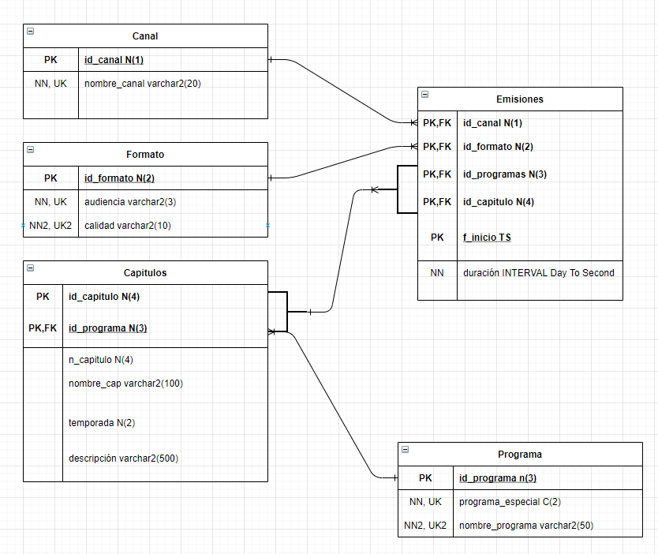
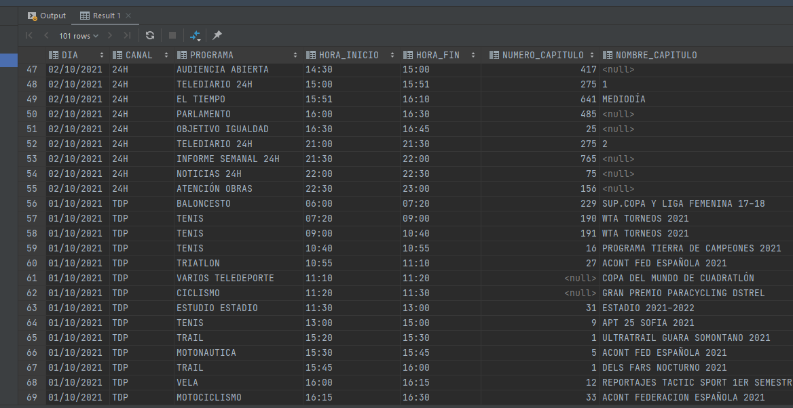

Proyecto de repaso de ASGBD
Primeros pasos
Un buen diseño de la base de datos es clave para este trabajo. Quizá ha sido la parte que más me ha costado hacer, pero como ya he dicho es la más importante. Para empezar he leido los datos de las parrillas y he diseñado unas tablas en borrador. Estas tablas han ido cogiendo forma y decidí pasarlas a draw.io para tener un diseño más profesional y más leible. Tras muchas vueltas y algunos cambios de tablas, de restricciones y de claves, este es el diseño:
La creación de las tablas no supuso mucho inconveniente aunque más de una vez edité alguna. Lo más costoso vino con los inserts. En mi tabla capítulos y mi tabla emisiones los inserts eran muchísimos, varias horas de trabajo mirando datos de las tablas y complementándolo más o menos de forma coherente.
Al finalizar los inserts realicé las vistas, en mi caso siempre me gusta hacer select e ir mirando y luego ya crear la vista.
Por ejemplo:
create view jonathan_lorenzo_vista5 as
select nombre_programa, n_capitulo as numero_capitulo, nombre_capitulo
from capitulos
join programa using (id_programa)
where descripcion like '%TENIS%';
Es una vista que nos permite buscar la palabra tenis dentro de todas las descripciones y nos muestra las que contengan
dicha palabra.
Dificultades encontradas y Soluciones
La mayor dificultad y la más clara ha sido la realización del diseño correcto que me permitiese meter todos los datos. Me ha costado bastante y he tenido que cambiarlo un par de veces, siempre me fallaba algo o me faltaba algo o no veía suficiente coherencia.
También podríamos añadir como cierta dificultad la introducción de datos en tablas que tienen varios IDS y que te obligan a ir mirando constantemente, pero esto en verdad es organización y paciencia.
Conclusión Final
Para mi ha sido un trabajo un poco agotador de bastantes horas, pero dicen que todo trabajo tiene su recompensa y la verdad es que ver la parrilla en mi datagrip me ha hecho sentir bien. Sobretodo sabiendo que todo lo hice yo.
